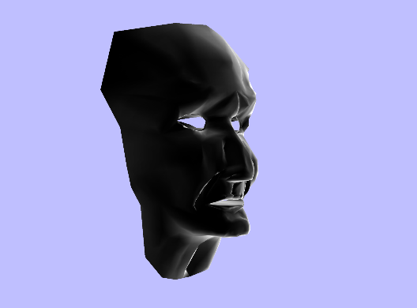

Fresnel.h
The Fresnel application is designed to illustrate where the strong Fresnel reflections occur on the face mask model. The face is black with white highlights, where the strong reflections are. The application uses both a vertex and a pixel shader, just like the refraction application does. The Fresnel factor is a greatly simplified version from the theoretic value, just to minimize the computations in a real--time application. Two screen shots from the Fresnel shader application are shown with the mask at different angles.
 |
|  |